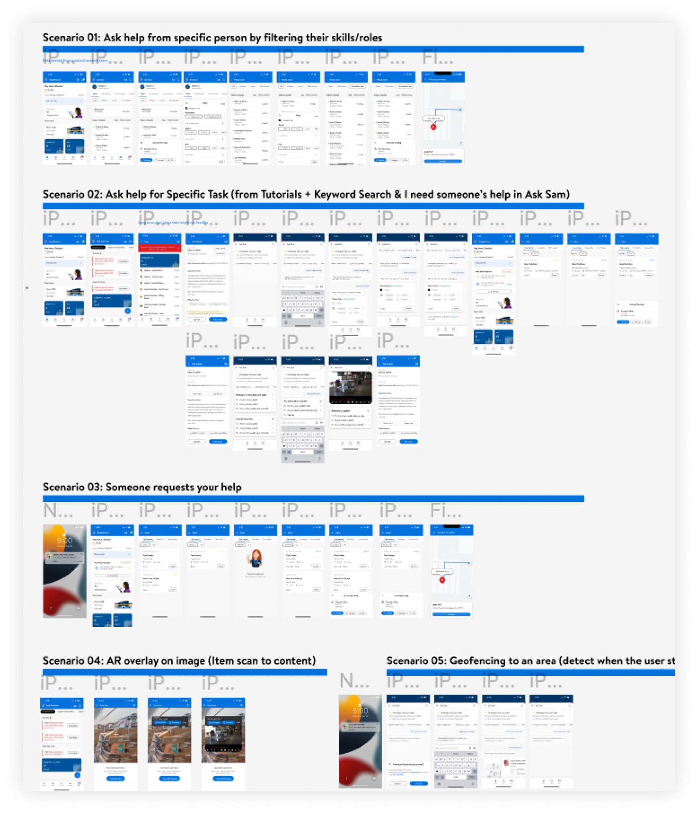
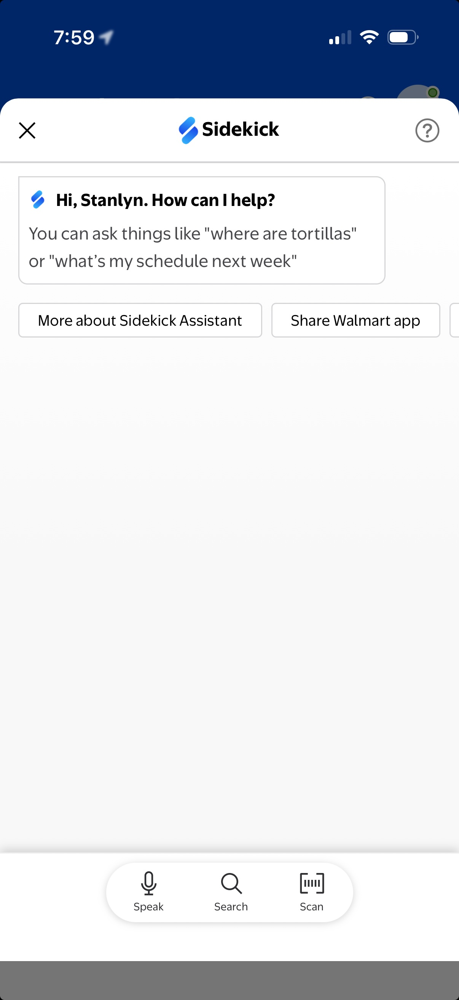
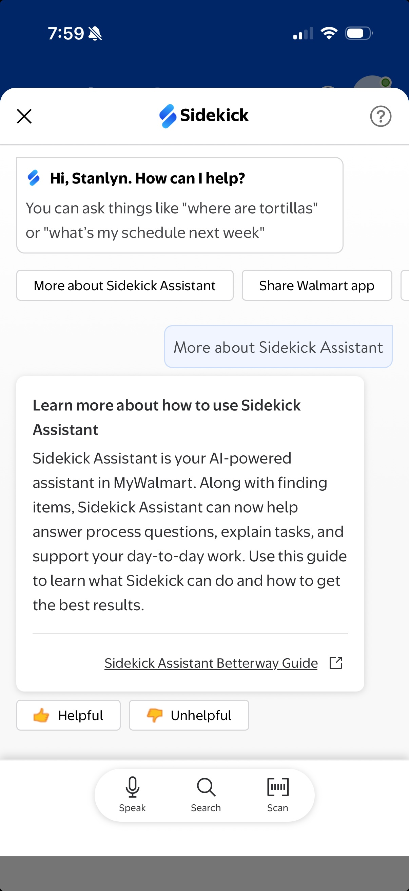

What the walkie-talkie already does right
How I evaluated conversational and AR-based learning features for Walmart store associates, and turned 25 on-floor usability problems into 53 recommendations for what Me@Walmart (now MyWalmart)'s ITFOW initiative should become.


Learning in a Walmart store is hard by design
Store associates at Walmart face a unique challenge: they need to access knowledge (how to handle a customer request, complete a task, find a coworker) in an environment that is inherently hostile to slow, screen-heavy interactions. Loud floors, busy hands, frequent customer interruptions, and outdoor work areas conspire against any digital tool that demands more than a few seconds of attention.
The In The Flow of Work (ITFOW) initiative, developed by the Associate Learning & Leadership team, proposed a direct answer: learning must have proximity to the task. Instead of sending associates away from the floor to complete training, ITFOW brings the right content (tutorials, guided help, connected coworkers) directly into the moment of need via Me@Walmart's Ask Sam and task features.
Before any of this could ship at scale, the team needed to know: Do these features actually work for associates on the floor? This is what the research set out to answer.

Store Associates have little time to monitor their mobile phone during the day
How to adapt to this environment and encourage Store Associates to use the features on Me@Walmart without loss of work productivity?
- Less steps to complete tasks (even less than three clicks)
- Time sensitive
- Talk rather than text
- Notify everything important
1-on-1, scenario-based, on-device
We ran five 60-minute moderated testing sessions with non-manager store associates representing a range of tenure, roles, and technology comfort levels. Each participant worked through five scenarios on an actual Me@Walmart build (the same app they use on shift), so behavioral patterns, hesitations, and workarounds reflected real conditions rather than hypothetical preferences.
| Participant | Tenure | Position | Store Knowledge | Tech Fluency |
|---|---|---|---|---|
| P01 | 5 years | Associate | ||
| P02 | 21 years | Associate | ||
| P03 | 9 months | Associate | ||
| P04 | 2 years | Team Lead | ||
| P05 | 3 years | Team Lead |
Satisfied, but asking for less friction
Store Associates are satisfied (6.4/7) with the new learning features on Me@Walmart. They believe these features can make their work easier by enabling them to quickly find useful content (tutorials) and ask for help from coworkers.
However, they are asking for a more streamlined experience with fewer steps to navigate, driven by their on-field work environment. The current interface designs and user flows are not intuitive enough, which reduces the functionality of the learning features.
Research identifies 25 problems in five scenarios and provides 53 recommendations to move forward.

Six themes across 25 problems
Findings clustered into six recurring themes that cut across all five scenarios.
Four problems affecting every feature
Before diving into the five scenarios, the research surfaced four systemic issues that touched every part of the experience. These aren't feature bugs; they're environmental and behavioral realities that any design must account for.
All 5 participants reached for their walkie talkies or Work Chat before considering Me@Walmart. For associates who have worked the floor for years, the radio is instant, familiar, and requires no screen.
All 5 participants said push notifications would increase their Me@Walmart usage, but only if the alerts are loud enough to be heard over a busy store floor. The current implementation fails both requirements: notifications exist, but they're easily missed.
All 5 participants failed to notice new features without prompting, including filter options (4/5), the scan feature (2/3), and "I need someone's help" in Ask Sam (2/5). On a busy floor, subtle UI additions simply don't register.
3 out of 5 participants noted that colleagues frequently lack access to a working, fully set-up store phone, meaning any feature on Me@Walmart is blocked before it starts for a meaningful share of the workforce.
Five scenarios, measured satisfaction, actionable gaps
Each scenario simulated a real on-floor situation associates encounter. CSAT was measured on a 1–7 scale after each scenario. High scores don't mean the design is finished; they mean participants can see the value, even when the current execution creates friction.
Ask for help from a specific person
Navigate My Team to find a coworker by skill or department and connect with them.
Ask help for a specific task
Find a task, access tutorials, search Ask Sam for guidance, and submit a help request.
Someone requests your help
Receive and respond to a help request from another associate (the helper experience).
Item scan to content
Scan a product barcode to surface relevant tutorials and item information in Ask Sam.
Geofencing to an area
Receive a location-triggered prompt when entering a specific department and use it to get contextual help.
All 5 participants found the alphabetical name ordering on My Team too slow to navigate. They need to find someone by department first, then by availability, not by last name.
3 of 5 participants preferred to navigate directly to a coworker rather than message or call. But the navigation option is hidden two taps deep. 2 participants wanted all three actions visible from the list view.
4 of 5 participants wanted skills that matched their roles and were grounded in real training data, ideally linked to uLearn/Academy badges. Generic skill tags felt arbitrary.
All 5 participants wanted to see their own tasks first when they tap "Task", but the Task Overview page showed team and store tasks, requiring them to scroll to find themselves.
All 5 participants had to guess what each button did. The labels don't communicate the format difference (video vs. text). 2 of 5 also reported the tutorial buttons were hard to find if the task description was long.
All 5 preferred video tutorials, but 4 of 5 wanted synchronized text. The current design separates them into two separate buttons, making associates choose instead of combining formats.
4 of 5 participants expected searches relevant to their role or department, not store-wide or platform-wide popular queries. 2 participants didn't understand how popular searches were calculated at all.
4 of 5 participants reported that Ask Sam is one of their most-used features, but nearly all of that usage is to help customers find items and check prices, not to access learning or task content for their own use.
Participants raised nearly identical concerns from both sides of the help request flow: as the person asking and as the person responding. The lowest satisfaction score (5.9/7 for the helper experience) reflects how broken this two-way connection currently is.
4 of 5 participants found it unintuitive that help requests could only be submitted from within Ask Sam. The flow isn't accessible from the homepage, task detail page, or lock screen.
4 of 5 participants (as helpers) found the flow from "Accept" to actually connecting with the requester required too many navigations. They expected to be routed immediately to a connection option.
3 of 5 participants expected time-sensitive requests to expire or escalate automatically. Old requests staying in the queue with no context about urgency felt misleading and unreliable.
Scanning is one of the most-used features for customer-assist tasks, but it lives only inside Ask Sam. 3 of 4 participants wanted the scan icon on every page. 2 participants thought the current icon looked more like a camera than a scanner.
2 of 4 participants reported failed scan experiences: slow loading, difficulty isolating a single item, and returning too many results that required manual deletion.
2 of 4 participants expected tapping "More Help" on a geofence prompt to let them call for assistance or submit a help request. Instead it opened Ask Sam's search, which felt irrelevant when they already knew they needed a person, not information.
25 problems, 53 recommendations, ranked for action
Every problem identified in the study was logged and prioritized by the team. The majority landed as High priority, reflecting that the current implementation actively reduces functionality rather than simply being unoptimized. A handful required further research before redesign could begin.
| Problem | Scenario | Priority |
|---|---|---|
| Name ordering on My Team | Scenario 1 | High |
| Navigate / Message / Call visibility | Scenario 1 | High |
| Task Overview page ordering | Scenario 2 | High |
| Ambiguous tutorial button labels | Scenario 2 | High |
| Video + text tutorial separation | Scenario 2 | High |
| Ask Sam popular searches irrelevant | Scenario 2 | High |
| Too many steps to connect as helper | Scenario 3 | High |
| Scan icon accessibility | Scenario 4 | High |
| Lack of notifications | General | High |
| New feature unawareness | General | High |
| Skillset filter relevance | Scenario 1 | Need Research |
| Old habits: Help Request vs. radio | General | Need Research |
| Unawareness of new features | General | Mid |
| Don't use store phone | General | Mid |
Three research directions to move forward
Use Cases of Help Request on Me@Walmart
Walkie talkies and Work Chat dominate, but this study couldn't fully explain why. Before redesigning the help request flow, the team needs to understand what Me@Walmart can offer that radio can't: richer context, skill matching, scheduling. That answer should shape the design, not the other way around.
A/B Testing for Uncertain Design Decisions
Several questions from this study had no clear winner: auto-surfacing recommended searches vs. waiting for a tap, for instance. A/B testing via UserZoom Survey can gather fast, quantitative signal from a much larger associate pool and close those open decisions before the next build.
Iterative Testing for New Designs
Moderated testing on every design iteration, not just at POC stage. This study's findings are a snapshot. The real value is building a research rhythm that travels with the product, so new designs are tested before they ship rather than validated after.
Ask Sam grew up. It's now Sidekick.
The POC we evaluated in 2022 asked a simple question: can learning happen at the moment of need, without pulling associates off the floor? The research identified the foundations (conversational input, task proximity, speak-search-scan as a unified interaction model) and surfaced the friction that had to be resolved first.
Four years later, Ask Sam has become Sidekick: a full AI-powered assistant built into MyWalmart. It doesn't just find items anymore. It answers process questions, explains tasks, and supports associates through their day-to-day work, exactly the vision the ITFOW research was built to validate.
The walkie-talkie is still on the belt. But now there's something on the phone that earns its place next to it.


What this research taught us about designing for the floor
-
High satisfaction scores don't mean the design is working. A 6.4/7 overall CSAT is strong, but it measures perceived value, not usability. Associates understood what ITFOW was trying to do and appreciated the direction. The friction came from execution gaps: the distance between what the feature promised and how it actually felt to use. Those are fixable.
-
The environment is the primary constraint. Every design problem we found ultimately traced back to a store floor reality: noise, motion, interruptions, busy hands. Features designed at a desk fail on the floor. On that floor, three clicks is the upper limit, not a guideline.
-
Behavior change requires more than good UI. A better UI alone won't displace the walkie talkie. New tools earn habitual use through notification design, onboarding strategy, and in-store training. The research surfaced this clearly, and the recommendations reflect it.